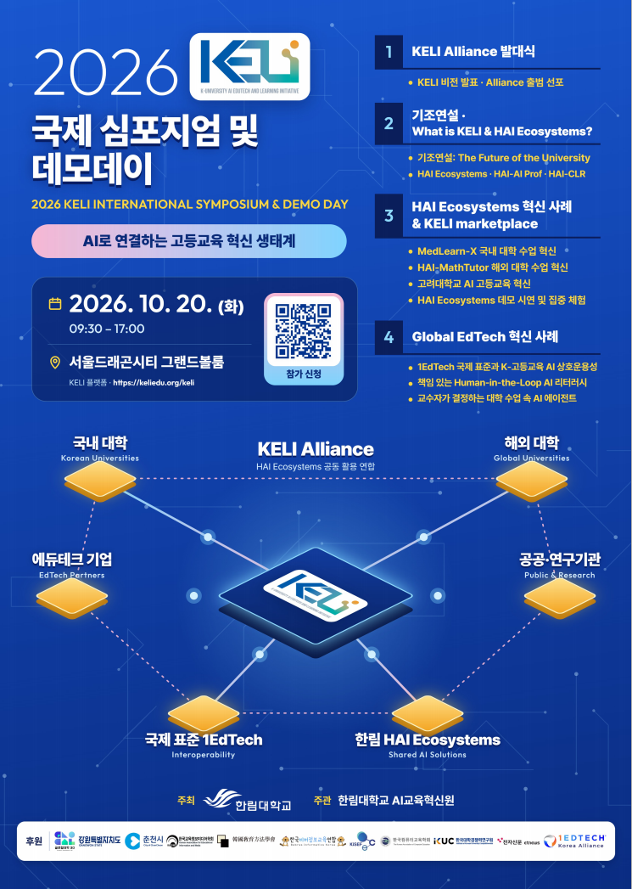

안녕하십니까.
한림대학교 KELI 사무국입니다.
한림대학교에서는 KELI의 공식 출범과 AI 기반 고등교육 혁신 비전 및 성과 공유를 위한 「2026 KELI 국제 심포지엄 및 데모데이」를 개최하고자 합니다.
이번 행사는 「AI로 연결하는 고등교육 혁신 생태계」를 주제로, KELI Alliance 출범을 통해 대학·기업·공공 및 연구기관 간 협력 기반을 구축하고,
국내외 고등교육 AI 혁신 사례와 글로벌 에듀테크의 발전 방향을 공유하기 위해 마련되었습니다.
또한 한림대학교가 개발·실증한 HAI Ecosystems 19개 AI 교육 솔루션을 직접 체험할 수 있는 시연 공간을 운영하여, AI 기술의 교육 현장 적용 가능성과 활용 성과를 소개할 예정입니다.
이에 국내외 대학 및 교육 분야 관계자, 교육·산업·연구기관 관계자, 기업 관계자 여러분의 많은 관심과 적극적인 참여를 부탁드립니다.
✅ 행사 개요
1️⃣ 행사 일시: 2026. 10. 20.(화) 09:30~17:00
2️⃣ 행사 장소: 서울드래곤시티 그랜드볼룸
3️⃣ 참가비: 무료 (사전 신청자에 한하여 오찬 제공)
✅ 주요 프로그램
1️⃣ KELI Alliance 발대식 및 KELI 비전 발표
2️⃣ 기조연설: The Future of the University
3️⃣ KELI 및 HAI Ecosystems 소개
4️⃣ HAI Ecosystems 기반 국내외 고등교육 혁신 사례 발표
5️⃣ Global EdTech 혁신 사례 공유
6️⃣ HAI Ecosystems 19개 AI 교육 솔루션 시연 및 체험
✅ 참가 신청
1️⃣ 신청 기간: 2026. 9. 9.(수) ~ 10. 16.(금)
2️⃣ 신청 방법: 온라인 신청 (https://forms.gle/KLX7yRvfQQQuWC2U6)
✅ 행사 안내자료
1️⃣ 2026 KELI 국제 심포지엄 및 데모데이 포스터 및 세부 일정표
2️⃣ 2026 HAI Ecosystems 19개 솔루션 소개 자료
※행사 세부 일정 및 프로그램은 첨부된 자료를 참고하여 주시기 바랍니다.
✅ 문의 사항
한림대학교 KELI 사무국
☎ 033-248-3246, 3044, 3041

첨부파일
내용은 게시 당시 기준입니다.
· 문의: KELI 사무국 033-248-3242 / contact@keliedu.org